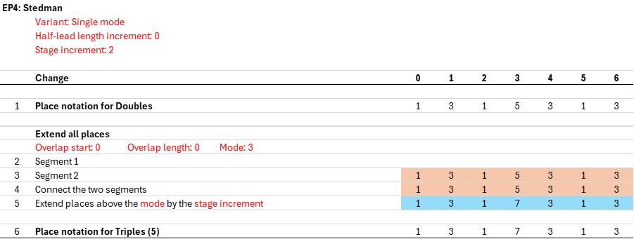
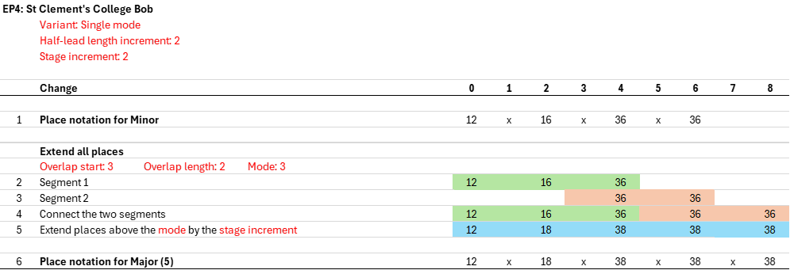
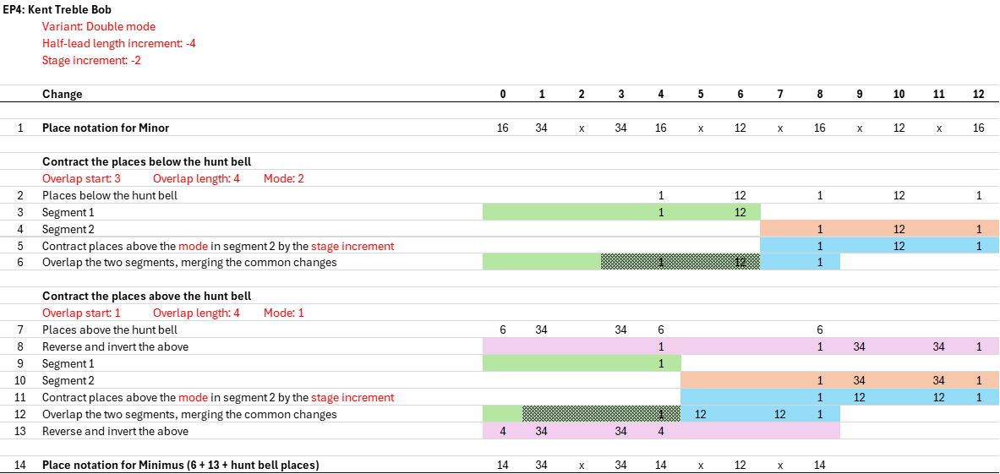
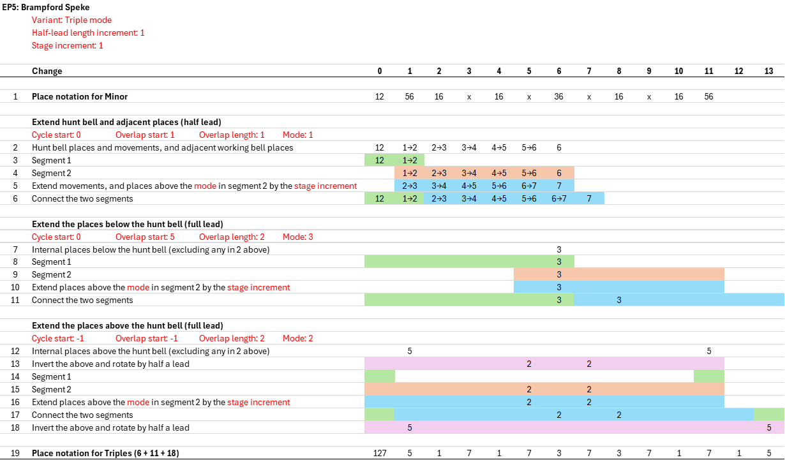

Appendix D cont. Method Extension Processes (DRAFT ONLY)
4 a)
Extension Process 4 - Introduction
EP4 replaces the former EP1 and EP3 extension processes. It produces extensions that can both keep the lead length fixed (replacing EP1), and expand the lead length (replacing EP3). EP4 can also contract a parent method to lower stages in some cases. And EP4 can produce extensions that are a single stage higher, as well as the more common scenario of producing extensions that are an even number of stages (usually two) higher. Finally, EP4 can operate in three different modes: single mode, double mode, and triple mode. This choice of mode simplifies the extension process in some cases, and supports a wider range of extensions in other cases. The above variants of EP4 are all described below. It will be seen that EP4 uses the same core process to generate extensions, but with different parameters to specify which of the above variants is used.
There are three key parameters to specify when using EP4:
-
Single mode, double mode or triple mode.
- In a single mode extension, a method's places are processed together, without any further splitting.
- In a double mode extension, a method's places are split into below-the-hunt places and above-the hunt places, with each subset processed separately, before being recombined in the final step of the process. Double mode extension relies on the hunt bell having a path for which the extended path is obvious.
- In a triple mode extension, a method's places are split into hunt bell places, below-the-hunt places, and above-the hunt places, with each subset processed separately, before being recombined in the final step of the process. Triple mode extension is used when the extension of the hunt bell path isn't necessarily obvious and needs to be specified, as may be the case in Alliance and Treble Place methods.
- Lead length increment (zero or a higher even number)
- Stage increment (one or a higher even number).
4 b)
Extension Process 4 - Single Mode, Fixed Lead Length
[Description]
Example
The simplest EP4 case is a single mode, fixed lead length extension with a stage increment of 2. The diagram below shows this applied to Stedman Doubles. Further details are provided after the diagram.

[Further details]
4 c)
Extension Process 4 - Single Mode, Expanding Lead Length
[Description]
Example
The next EP4 case is a single mode, expanding lead length extension with a stage increment of 2. The diagram below shows this applied to St Clement's College Bob Minor. Further details are provided after the diagram.

[Further details]
4 c)
Extension Process 4 - Double Mode
[Description]
Example
The next EP4 case is a double mode extension with a stage increment of 2. The diagram below shows this applied to Cambridge Surprise Minor. Further details are provided after the diagram.

[Further details]
4 c)
Extension Process 4 - Triple Mode
[Description]
Example
The next EP4 case is a triple mode extension with a stage increment of 2. The diagram below shows this applied to Nightingale Treble Place Minor. Further details are provided after the diagram.

[Further details]
4 c)
Extension Process 4 - Contraction
[Description]
Example
The next EP4 case is contraction, stage decrement of 2. The diagram below shows this applied to Kent Treble Bob Minor. Further details are provided after the diagram.

[Further details]
4 c)
Extension Process 4 - Single Stage
[Description]
Example
The next EP4 case is single stage extension. The diagram below shows this applied to Brampford Speke Bob Minor. Further details are provided after the diagram.

[Further details]
4 c)
Extension Process 5 - Single Stage
[Description]
Example
The diagram below shows EP5 applied to Brampford Speke Bob Minor. Further details are provided after the diagram.

[Further details]